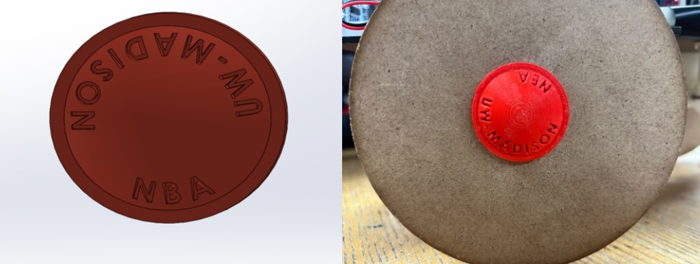
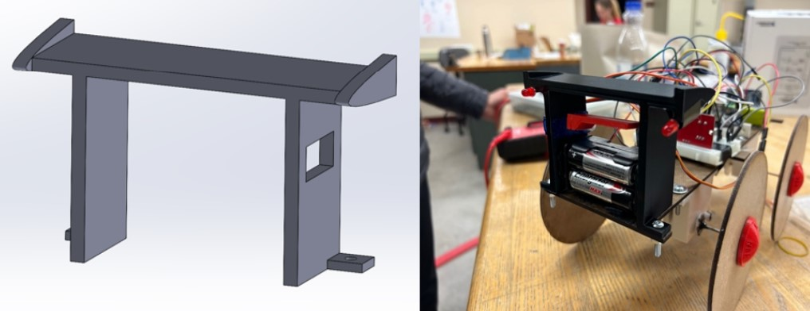

Throughout my time at UW-Madison, I’ve had the opportunity to take a variety of courses that have not only
expanded my knowledge of but have also fueled my passion for mechanical engineering. Below is a list of a few of
my favorite courses that have challenged me, fostered my curiosity for engineering, and contributed to my growth
as an engineering student!
This was one of the first classes that I’ve taken at UW-Madison, and it did a fantastic job of introducing the
engineering design process. It had a semester-long project which main involved the design of an autonomous
trolley. There were many challenges that the trolley was put through including a hill climb, a race, and
following a leading trolley that randomly sped up and down. Some fun features of the trolley were a spoiler,
custom hubcaps, brake lights, and an airbrake. Below are some pictures of the trolley with the 3D printed parts
that I designed for it, as well as a video about the trolley.

